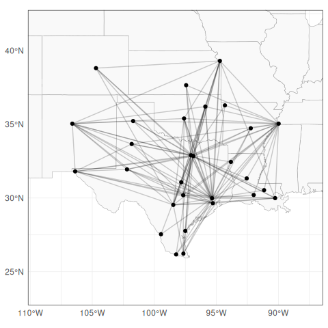
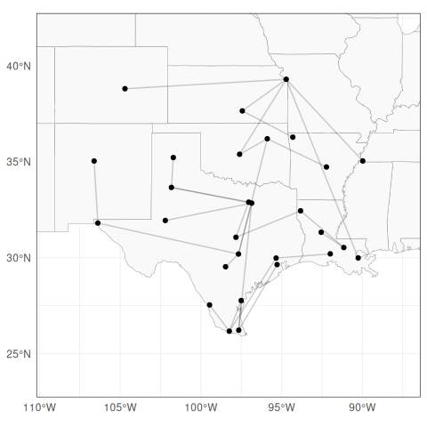
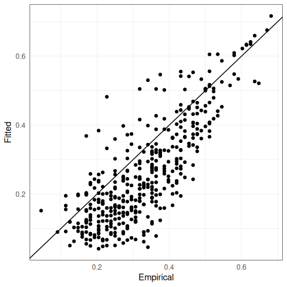
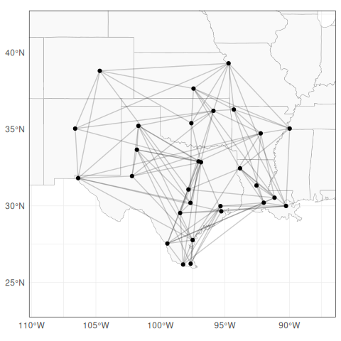
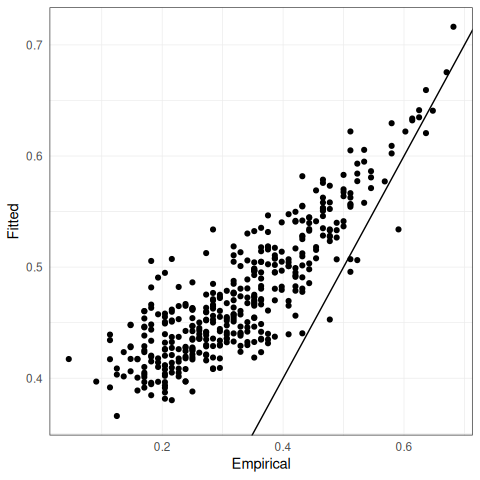

1 The dataset
The flights dataset contains daily total delays of major U.S. airlines.
For details, see the corresponding documentation page.
Below, we plot all airports in the dataset.
plotFlights(plotConnections = FALSE, map = "world", xyRatio = 2)To perform an example application, we consider the years 2010 - 2013 and choose (somewhat arbitrarily) airports from the westcoast with a large number of flights per year. A similar analysis is perform in Hentschel, Engelke, and Segers (2022). For more detailed explanations see Vignette “applicationDanube” and the help pages of applied functions. Note: In the CRAN version of this package, these are the only available years. A version of this package with a larger dataset is available on GitHub
# Specify years
yearNames <- as.character(seq(2010, 2013))
# Compute departures + arrivals per airport
flightsPerConnection <- apply(flights$flightCounts[, , yearNames], c(1, 2), sum)
flightsPerAirport <- rowSums(flightsPerConnection) + colSums(flightsPerConnection)
# Select airports (more than 1000 flights/year and rough westcoast coordinates)
indKeep <- (
flightsPerAirport >= length(yearNames) * 1000
& flights$airports$Longitude < -119 & flights$airports$Longitude > -130
& flights$airports$Latitude > 25 & flights$airports$Latitude < 50
)
IATAs <- flights$airports$IATA[indKeep]
# Plot airports + connections (indicating number of flights by thickness)
plotFlights(
IATAs,
useAirportNFlights = TRUE,
useConnectionNFlights = TRUE
)Next, we create the matrix containing (departing) flight delays for the considered airports and dates.
dates <- as.Date(dimnames(flights$delays)[[1]])
indDates <- format(dates, "%Y") %in% yearNames
mat <- flights$delays[indDates, IATAs, "departures"]
# We remove all rows containing NAs
rowHasNA <- apply(is.na(mat), 1, any)
mat <- mat[!rowHasNA, ]
# Percentile used as threshold when transforming to multivariate Pareto distribution
p <- 0.7
# Empirical extremal correlation matrix
emp_chi_mat <- emp_chi(mat, p = p)This function will be used later to compare fitted parameters to empirical ones.
# Utility function to plot fitted parameters against true/empirical ones
plot_fitted_params <- function(G0, G1, xlab = 'Empirical', ylab = 'Fitted'){
return(
ggplot()
+ geom_point(aes(
x = G0[upper.tri(G0)],
y = G1[upper.tri(G1)]
))
+ geom_abline(slope = 1, intercept = 0)
+ xlab(xlab)
+ ylab(ylab)
)
}2 Fitting a model to the flight graph
As a baseline for graphical modelling, we consider the graph with edges representing at least monthly connections between airports.
# Compute undirected flights per connection between selected airports
flightsPerConnectionUD <- flightsPerConnection + t(flightsPerConnection)
flightsPerConnectionUD <- flightsPerConnectionUD[IATAs, IATAs]
# Make flight graph from adjacency matrix
A <- 1 * (flightsPerConnectionUD > length(yearNames) * 12)
flight_graph <- graph_from_adjacency_matrix(A, diag = FALSE, mode = "undirected")
# Plot flight graph
plotFlights(IATAs, graph = flight_graph, clipMap = 1.3, xyRatio = 1)
Given the flight_graph object, we fit a Hüsler–Reiss model with that graphical structure.
# Fit the model
model_fit <- fmpareto_graph_HR(
data = mat,
graph = flight_graph,
p = p,
method = "vario"
)
# Compute likelihood/ICs
flights_loglik_graph <- loglik_HR(
data = mat,
p = p,
graph = flight_graph,
Gamma = model_fit
)
cat("Flight graph BIC =", round(flights_loglik_graph['bic'], 2), "\n")
#> Flight graph BIC = 30156.59
# Plot fitted parameters
plot_fitted_params(emp_chi_mat, Gamma2chi(model_fit))
3 Fitting a tree model
Next, we fit an extremal tree model to the flight delays using emst().
# Fit the model
flights_emst_fit <- emst(data = mat, p = p, method = "vario")
# Compute likelihood/ICs
flights_loglik_tree <- loglik_HR(
data = mat,
p = p,
Gamma = flights_emst_fit$Gamma,
graph = flights_emst_fit$graph
)
cat("Tree BIC =", round(flights_loglik_tree['bic'], 2), "\n")
#> Tree BIC = 30837.64
# Plot fitted graph, parameters
plotFlights(
IATAs,
graph = flights_emst_fit$graph,
xyRatio = 1,
clipMap = 1.3
)
plot_fitted_params(emp_chi_mat, Gamma2chi(flights_emst_fit$Gamma))
4 Fitting a general model
Lastly, we fit a general graphical model with eglearn(), using a suitable list of penalization parameters.
# Fit the model
rholist <- seq(0, 0.50, length.out = 11)
flights_eglearn_fit <- eglearn(mat, p = p, rholist = rholist, complete_Gamma = TRUE)
# Compute likelihood/ICs
flights_loglik <- sapply(seq_along(rholist), FUN = function(j) {
loglik_HR(
data = mat,
p = p,
Gamma = flights_eglearn_fit$Gamma[[j]],
graph = flights_eglearn_fit$graph[[j]]
)
})The “best” penalization parameter can be chosen e.g. such that the BIC is minimized.
ggplot(
mapping = aes(x = rholist, y = flights_loglik['bic', ])) +
geom_line() +
geom_point(shape = 21, size = 3, stroke = 1, fill = "white") +
geom_hline(aes(yintercept = flights_loglik_graph['bic']), lty = "dashed") +
geom_hline(aes(yintercept = flights_loglik_tree['bic']), lty = "dotted") +
xlab("rho") +
ylab("BIC") +
scale_x_continuous(
breaks = rholist,
labels = round(rholist, 3),
sec.axis = sec_axis(
trans = ~., breaks = rholist,
labels = sapply(
flights_eglearn_fit$graph,
igraph::gsize
),
name = "Number of edges"
)
)
best_index <- which.min(flights_loglik['bic',])
cat('Best rho =', rholist[best_index], '\n')
#> Best rho = 0.15
cat('Corresponding BIC =', flights_loglik['bic', best_index])
#> Corresponding BIC = 25232.24We plot the estimated graph and parameters of the best fitted model.
best_graph <- flights_eglearn_fit$graph[[best_index]]
best_Gamma <- flights_eglearn_fit$Gamma[[best_index]]
plotFlights(IATAs, graph = best_graph, clipMap = 1.3, xyRatio = 1)
plot_fitted_params(emp_chi_mat, Gamma2chi(best_Gamma))